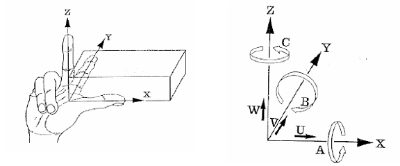

| 坐标系设定机能 |
坐标轴可以分为线性轴（进给轴）和旋转轴两种。三个基本的线性轴定义为X,Y,Z轴，  图3.3－1 根据右手法则，普通立式铣床的坐标系定义如图3.3所示： 轴进给限位监控 轴进给限位值可以预先设置，称为软限位。在NC程序执行过程中，系统提前对NC程序 段进行预读处理，并监控坐标轴是否超过软限位值。如果超过软限位值则做如下处理： 显示错误211，并且在程序显示区的第三行显示产生限位的NC程序段。 在产生限位的程序段到达前停止程序执行。 软限位监控对于所有插补指令都有效，但是只对编程终点坐标起作用。 坐标轴在任何时候碰到硬件限位开关，系统也会显示报警信息（由PLC程序设置）。 |